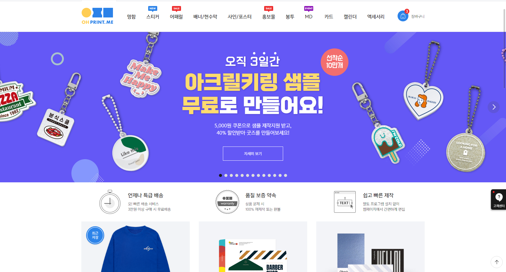

사이트 이름 클릭 시 홈페이지로 이동합니다.
- Redprint
- 인쇄 상품은 거의 다 있습니다. 가격이 조금 있지만
대부분 1개부터 제작 가능하며 인터페이스가 깔끔합니다.
- OH Print. me
- 간편한 디자인 툴을 지원하여 포토샵 등의 프로그램 없이도
칼선을 따거나 간편하게 디자인을 할 수 있습니다. 의류 인쇄도
가능하며, 종종 할인 쿠폰 이벤트를 합니다.

- Huniprinting
- 대부분의 종이 인쇄를 서비스합니다. 홈페이지가 깔끔하고
특히 달력 인쇄 폼이 많습니다. 다만 1장부터가 아닌 6개, 8개
등 최소 수량 제한이 있습니다.
- Marpple
- 천 종류 인쇄로 유명한 곳입니다. 의류를 비롯하여 담요,
가방, 폰 케이스 등을 제작 할 수 있습니다.

- 쪼물샵
- 투명 보틀, 북보틀, 텀블러, 보온병, 머그컵 등에 인쇄를 할 수
있는 사이트입니다.
- Orbsei
- 사탕에 먹을 수 있는 잉크로 인쇄를 해 주는 업체입니다.

- 이 외에도 다양한 사이트가 있으니 한 번 찾아보세요!
- 엽서, 카드, 셔츠, 쿠션, 인형, 액자, 포스터, 등신대, 현수막,
향수, 오르골, 케이크, 스티커, 명함, 담요, 모자, 양말, 컵,
수건, 책, 손거울, 스탬프, 마우스패드, 파우치, 폰케이스,
그립톡, 뱃지, 부채, 캘린더, 타투스티커, 펜, 메모지 등
상상 이상으로 많은 것을 할 수 있답니다!